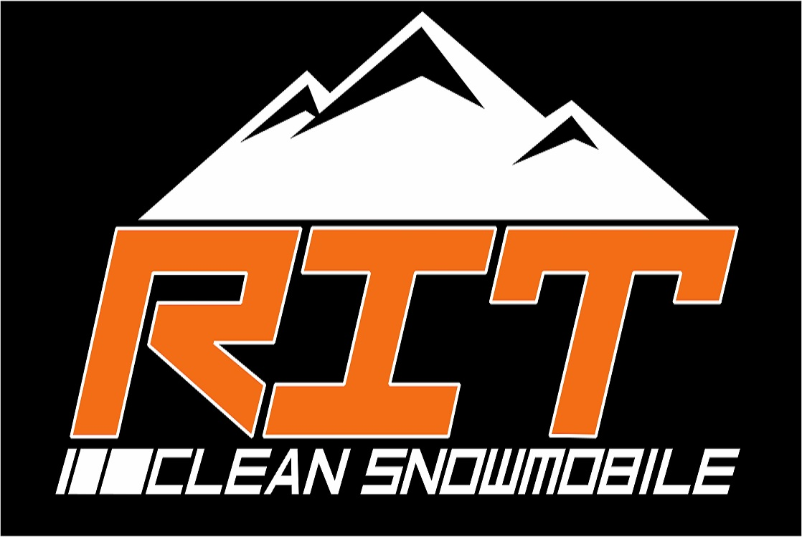

|  |
|
| Name: Jason Ganje |
Name: Eric Oswald |
| Hometown: Cheektowaga, NY |
Hometown: Williamsville, NY |
| Year: Third |
Year: Fourth |
| Major: Electrical/Mechanical Engineering Technology |
Major: Mechanical Engineering Technology |
|
| Position: Team Manager |
Position: Project Manager/Powertrain Lead |
| Bio: I have always been interested in power sports and in
the automotive industry. When I first came to RIT I found out about the
team and it seemed very interesting. Getting to use the knowledge from
the classroom and see how they apply in a real life application that I
enjoy is truly amazing. |
Bio: I have grown up around snowmobiles and cars my entire life.
My favorite part about both hobbies was new technologies in the powertrain
system, specifically with the use of alternative fuels. When I came to RIT
for mechanical engineering technology I knew that this club was for me. |
|
|
| Name: Carl Twyman |
Name: Spenser Lionetti |
| Hometown: Cranberry Lake, NY |
Hometown: Clarks Summit, PA |
| Year: Fourth |
Year: Third |
| Major: Computer Science |
Major: Mechanical Engineering Technology |
| Position: Secretary/Electrical Lead |
Position: Treasurer |
| Bio: I enjoy to play golf, rock climb, and long board in
my spare time. I have held two co-op positions, the first at
Moog Incorporated in East Aurora, NY, and the second at
BorgWarner in Ithaca, NY. Currently I am planning to graduate in May of 2018
after completing one more co-op, as well as two more years on the
Clean Snowmobile Team. |
Bio: I enjoy spending my time in the sled shop working on advancing
my knowledge and skills as an engineer. I have further become involved in the
team now as the treasurer for the 2016-2017 year and look forward to a great
year for the team. |
|
|
| Name: Nicholas Stelluti |
Name: Maria Florencia (Flo) de Sande |
| Hometown: South Salem, NY |
Hometown: Buenos Aires, Argentina |
| Year: Second |
Year: Fourth |
| Major: Mechanical Engineering |
Major: Mechanical Engineering |
|
| Position: Engine Team |
Position: Team Member |
| Bio: : I grew up around motorsports. Whether it was weekends at the
drag strip with my father and uncle, or riding the motocross track. My background
in motorsports lead me to my major and this team. |
Bio: I enjoy playing sports, being outdoors, and volunteering at the
animal shelter. I have completed two co-op blocks at New York Air Break as an Electronics
Hardware Engineer and am currently working at RIT as a Microfluidic Research Assistant.
I have been heavily involved in Student Government, Field Hockey Club, and Sigma Sigma Sigma
while at RIT and plan to graduate in May of 2018 after spending two more years on the Clean
Snowmobile Team. |
|
|
| Name: Nick Amato |
Name: Ian Kay |
| Hometown: Fort Lauderdale, Florida |
Hometown: Derwood, Maryland |
| Year: Third |
Year: Third |
| Major: Mechanical Engineering - Automotive |
Major: Mechanical Engineering |
| Position: Team Member |
Position: Team Member |
| Bio: Member of the RIT Men’s Hockey team (2015-2016), car enthusiast,
not avid of the cold and Rochester weather. |
Bio: Error 404, Bio not found |
|
|
| Name: Jacob Huppe |
Name: Iain Tracton |
| Hometown: Hooksett, NH |
Hometown: Roslyn, PA |
| Year: Third |
Year: Third |
| Major: Mechanical Engineering |
Major: Mechanical Engineering |
|
| Position: Team Member |
Position: Team Member |
| Bio: I like to play soccer, hockey and ultimate Frisbee and everything
outdoors. I also enjoy working on my car and playing around with anything with an engine.
On the side I do photography and make edits with my GoPro. I would like to go into R&D because
I like the process of designing parts from CAD to then getting a final product. |
Bio: : This is my second year on the team. I am looking forward to building on the
knowledge gained last year to further the team’s success this year. |
|
|
| Name: Dyllan Barnum |
Name: Frank Polito |
| Hometown: Clifton Park, NY |
Hometown: New Hampton, NY |
| Year: Fifth |
Year: Third |
| Major: Mechanical Engineering Technology |
Major: Mechanical Engineering Technology / Manufacturing and Mechanical Systems |
| Position: Chassis Lead |
Position: Team Member |
| Bio: I transferred to RIT after spending two years at Hudson Valley Community College
in Troy NY. I have been involved in extreme sports since I was three, and have a strong background
in automotive related repair and modification. If I’m not out on dirt bikes or working on something
in the garage, I’m hiking, fishing, or hunting in the Adirondacks. |
Bio: I’m a 3 rd year MET interested in going into automotive product design after I graduate.
This is my second year on the team and I look forward to what we will be able to bring to this year’s competition |